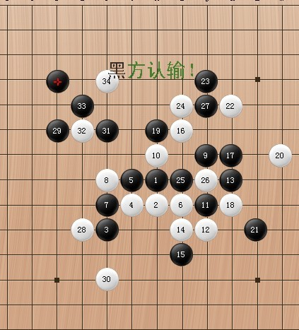
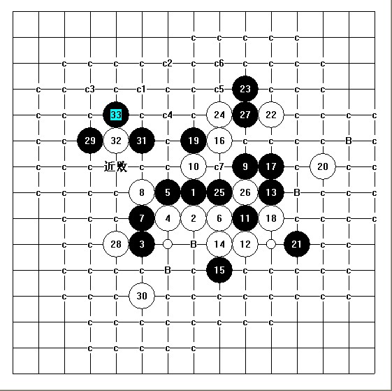

请指点
#1 请指点 作者：茗弈宽容 发表时间：2011-5-14 20:42:59

今天在三手和弟弟下的一盘棋,我执黑,请大家指教哪些不足之处和稍微比较好的地方,谢谢.
［ 消逝的雨 于 2011-5-15 17:09:44 时花20金币送鲜花一朵］
［ 消逝的雨 于 2011-5-15 17:09:52 时花20金币送鲜花一朵］
#2 Re:请指点 作者：屏蔽 发表时间：2011-5-14 20:54:45
黑棋肿么认输了。#3 Re:请指点 作者：茗弈宽容 发表时间：2011-5-14 21:13:54
哦,那是弟弟掉线了,我就认输了.请李老师不吝指点一二为感（黑白双方）。
［此帖子已被 茗弈宽容 在 2011-5-14 21:21:02 编辑过］
#4 Re:请指点 作者：刀魂 发表时间：2011-5-14 22:28:56
引用：
原文由 茗弈宽容 发表于 2011-5-14 20:42:59 :今天在三手和弟弟下的一盘棋,我执黑,请大家指教哪些不足之处和稍微比较好的地方,谢谢.
黑棋杀了，而且个人觉得黑棋有利，白30有点贸然行事，在这里给个小棋谱以供参考吧

如果有不对的地方，请多多指正，呵呵，好久没做传说中的棋谱了。好像隔了好久（至少一年半）没来论坛发言了。
 刀魂小制作.rar
刀魂小制作.rar［此帖子已被 刀魂 在 2011-5-14 22:33:43 编辑过］
［ 茗弈小刀 于 2011-5-14 23:04:15 时奖励此帖[金币加 100 威望加1］
#5 Re:请指点 作者：茗弈宽容 发表时间：2011-5-14 23:03:24
我主要是想知道对于行棋中某些地方判断欠缺或对局面理解错误的地方，该如何思考。
谢谢刀魂弟弟鼎力相助。
#6 Re:请指点 作者：消逝的雨 发表时间：2011-5-15 17:15:11
=======上图对应的爱五子棋谱代码如下，以便你拆解：========
h8h7f6g7g8i7f7f8j9h9j7j6j8k8h6
======================================================这个棋如果是我执黑，我肯定就选择这样的变化了。不喜欢白棋的活二太多，主要就是不好处理。

#7 Re:请指点 作者：茗弈七夜 发表时间：2011-5-16 10:35:46
楼上那样的话，我14就走E9了，白棋这里有权利活这个三吧。